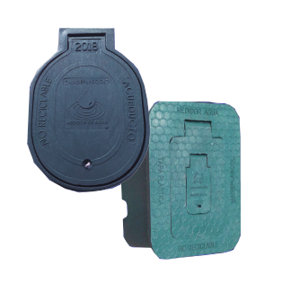

Caja para contador de Acueducto
Diseñadas para proteger óptimamente el contador del agua, estas cajas fabricadas con polipropileno y polietileno de baja densidad reciclado son altamente resistentes a la temperatura, la radiación ultravioleta, la humedad, la salinidad y al impacto por lo cual no se deforman, no se oxidan y evitan la proliferación de vectores. Por lo cual no son potencialmente expuestas al robo.

Cajas para contador de gas Natural
Diseñadas para proteger óptimamente el centro de medición de gas natural, estas cajas fabricadas con polipropileno y polietileno de baja densidad reciclado son altamente resistentes a altas temperaturas, la radiación ultravioleta, la humedad, la salinidad, impactos fuertes. por lo cual no se deforman, no se decoloran, no se oxidan y evitan la proliferación de vectores. A demás de esto estas cajas mejoran y valorizan su predio.

Contenedores para reciclaje
Elaborados con plásticos reciclados, ajustados a las diferentes necesidades, con diversos diseños y tamaños. Estos contenedores pueden ser usados en interiores y en exteriores ya que son altamente resistentes a la temperatura, la radiación ultravioleta, la humedad, la salinidad y al impacto por lo cual no se deforman, no se corren, no se oxidan y evitan la proliferación de vectores.